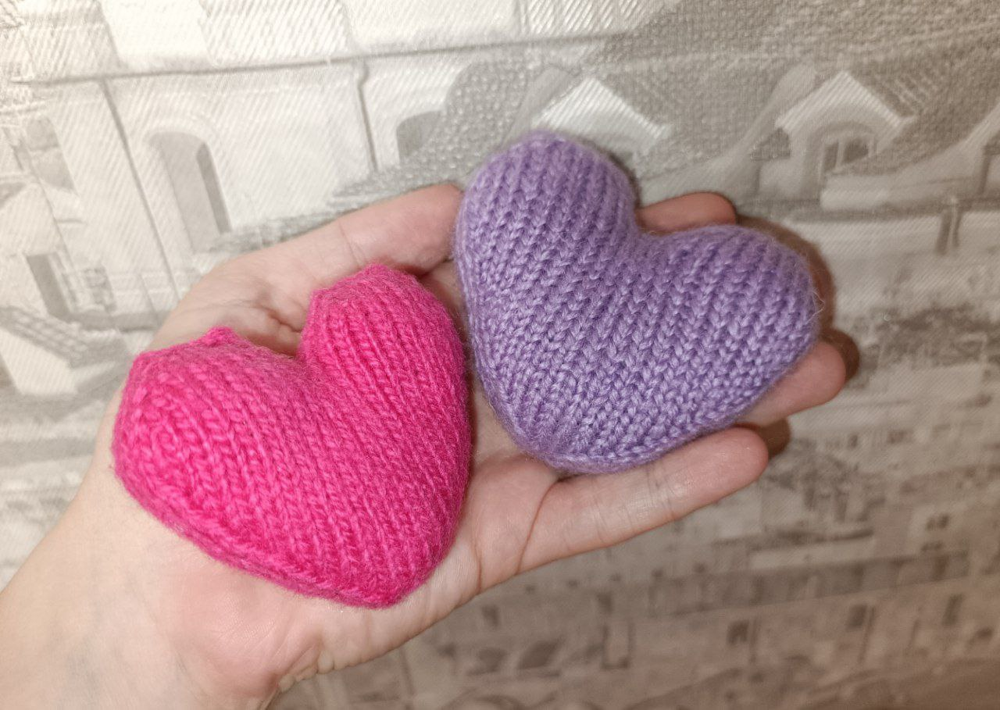
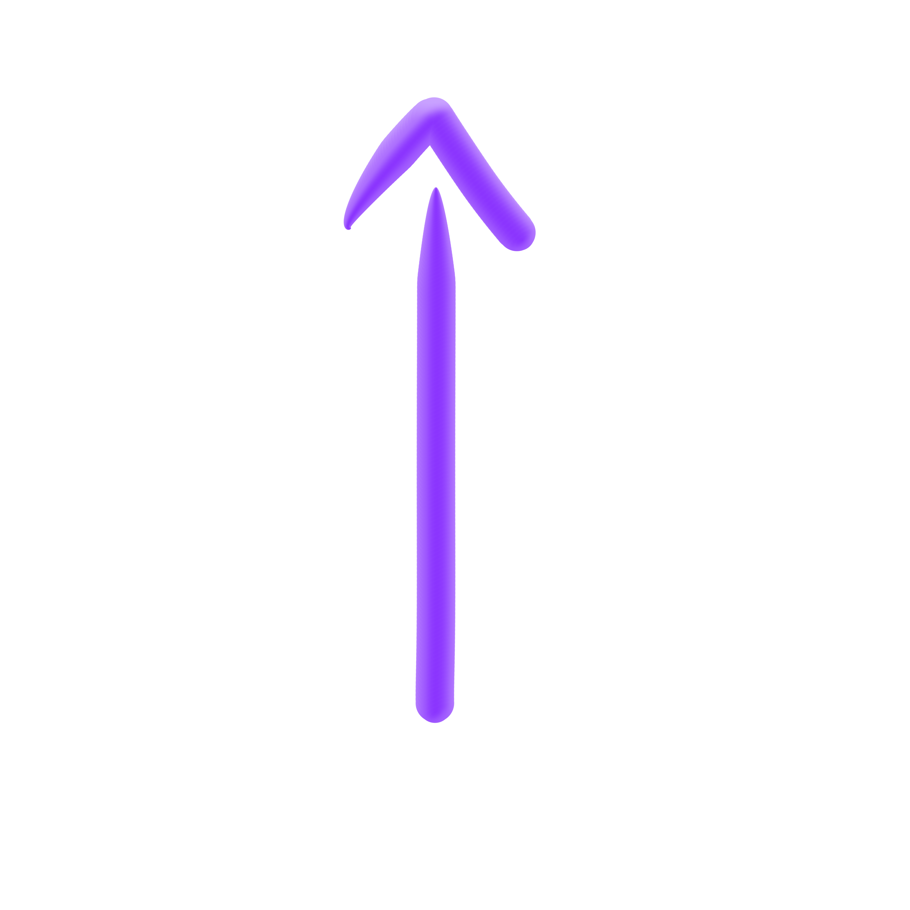

В этом месяце мастер-класс посвящён созданию сердца

Сердце спицами
- Пряжа
- Спицы чулочные - 4 шт.
- Маркеры - 2 шт. (для удобства, необязательно)
- Игла с толстым ушком
- Ножницы
- Наполнитель
-
Вяжем ушки сердца - повторить дважды - ряды 1-9:
- 12 петель методом Джуди
- 12 лицевых петель (первые 6 - за заднюю стенку, вторые 6 - за переднюю)
- маркер на начало ряда;
- (1 лицевая - прибавка - 2 лицевые - прибавка - 1 лицевая ) * 2 (16)
- 16 лицевых петель
- (1 лицевая - прибавка - 4 лицевые - прибавка - 1 лицевая ) * 2 (20)
- 20 лицевых петель
- 8 лицевых - прибавка - 2 лицевые - прибавка - 8 лицевых (22)
- 22 лицевые петли
- 9 лицевых - прибавка - 2 лицевые - прибавка - 9 лицевых (24)
- отрезаем нить, оставляя достаточно длинный хвостик для работы иглой
-
Ряды 10 - 31:
- Соединяем ушки - начало ряда к началу ряда: 24 лицевые петли по первой половинке, 24 - по второй
- 48 лицевых петель
- 48 лицевых петель
- (9 лицевых - убавка_правая - 2 лицевые - убавка_левая - 9 лицевых) * 2 (44)
- 44 лицевых петли
- 44 лицевых петли
- сшиваем пространство между ушками
- (8 лицевых - убавка_правая - 2 лицевые - убавка_левая - 8 лицевых) * 2 (40)
- 40 лицевых петель
- 40 лицевых петель
- (7 лицевых - убавка_правая - 2 лицевые - убавка_левая - 7 лицевых) * 2 (36)
- 36 лицевых петель
- (6 лицевых - убавка_правая - 2 лицевые - убавка_левая - 6 лицевых) * 2 (32)
- 32 лицевые петли
- (5 лицевых - убавка_правая - 2 лицевые - убавка_левая - 5 лицевых) * 2 (28)
- 28 лицевых петель
- (4 лицевых - убавка_правая - 2 лицевые - убавка_левая - 4 лицевых) * 2 (24)
- 24 лицевые петли
- (3 лицевых - убавка_правая - 2 лицевые - убавка_левая - 3 лицевых) * 2 (20)
- 20 лицевых петель
- (2 лицевых - убавка_правая - 2 лицевые - убавка_левая - 2 лицевых) * 2 (16)
- 16 лицевых петель
- (1 лицевая - убавка_правая - 2 лицевые - убавка_левая - 1 лицевая) * 2 (12)
- отрезаем нить, оставляя длинный конец
-
Завершение вязания
- вставляем нить в иглу и переснимаем петли по ходу вязания
- набиваем сердечко через отверстие
- затягиваем нить
- закрепляем и уводим внутрь нить
- отрезаем лишний конец нити и расправляем сердце
- Поделиться своими впечатлениями о мастер-классе
- Зарегистрироваться на нашем сайте
- Вернуться в следующем месяце на новой мастер-класс месяца
